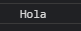
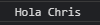
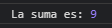
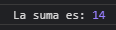
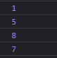
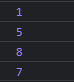

Arrow Functions
1.- Arrow function
Cuando es una sola sentencia es opcional las llaves de una función tradicional
Usando:
saludar = () => console.log('Hola');
saludar();

2.- Arrow function con parámetro
Usando:
saludarNombre = nombre => console.log('Hola', nombre);
saludarNombre('Chris');

3.- Ejemplo de uso normal con funciones
Usando:
sumar = function (valor1, valor2) {
return valor1 + valor2;
}
let result = sumar(4, 5);
console.log('La suma es:', result);

4.- Funciones usando arrow
Es obligado usar paréntesis para los parámetros cuando son más de dos.
La flecha indica el return.
Usando:
sumarArrow = (valor1, valor2) => valor1 + valor2;
let resultArrow = sumarArrow(9, 5);
console.log('La suma es:', resultArrow);

5.- Usando (.forEach) para iterar el array
Ejemplo con "function"
Usando:
const numeros = [1, 5, 8, 7];
numeros.forEach(function (element) {
console.log(element)
})

6.- Evadiendo "function" por "=>"
Usando:
const numeros = [1, 5, 8, 7];
numerosArrow.forEach((element) => {
console.log(element)
})
